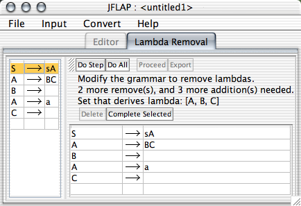

This action is the first of four steps in transforming a grammar to Chomsky normal form. The goal is to reform the grammar so that it generates the same language, but has no lambda productions. The goal is to have no rule in the grammar derives the empty string. The requirement is that the start variable cannot derive lambda. This operator consists of two major steps:
The left side of the interface shows the original edu.duke.cs.jflap.grammar. The functionality of the two toolbars shall be covered later. There are three labels between the two toolbars; the first tells which step the user is currently on, the second indicates how much work remains, and the third indicates which variables derive lambda.
The first step is to select those variables that derive lambda. In the example grammar given in the picture above, obviously B and C derive lambda, but so does A because of the rule A BC.
BC.
The user indicates a variable by clicking in the grammar table to the left (which holds the original grammar); the left hand side of the production clicked is assumed to be the desired variable. For example, if the user clicks the production A BCD, then JFLAP believes the user is indicating the variable A.
BCD, then JFLAP believes the user is indicating the variable A.
In order to complete this step, the user must indicate all variables that derive lambda. As the variables are selected (and verified to be correct), they will appear in the third label that shows which variables derive lambda. The second label will indicate errors to the user if any are made.
The next step is to reform the edu.duke.cs.jflap.grammar. There are two major parts to this: removing lambda productions, and adding new productions to ensure that the grammar accepts the same language.
To edit the grammar, use the grammar view in the lower right. Editing is like it is in the regular grammar view, with the exception that if any production is added that is not part of the reformed view, the user will be notified and it will be added. Additionally, existing productions cannot be edited: only the last row may be edited. To remove lambda productions, select those productions you wish to remove, and click the "Delete" button.
As far as what rules to add, if A BCDB is in the grammar and B and C derive lambda, the user would add the seven productions that consist of almost all permutations of the absence and presence of the variables that derive lambda, i.e., the first B, C and the second B. These are shown in the table below. (There are seven and not eight because the permutation where they are all there is already part of the grammar. Note that the variables are not really being deleted so much as they are being substituted with the empty string.)
BCDB is in the grammar and B and C derive lambda, the user would add the seven productions that consist of almost all permutations of the absence and presence of the variables that derive lambda, i.e., the first B, C and the second B. These are shown in the table below. (There are seven and not eight because the permutation where they are all there is already part of the grammar. Note that the variables are not really being deleted so much as they are being substituted with the empty string.)
| A |
A |
A |
A |
| A |
A |
A |
Adding these permutations of rules can become tedious. If there is a rule which implies the addition of a large number of permutations, the user may select the rule in the left hand-side table, and press the "Complete Selected" control. This will make the additions implied by that production for the user.
There are a few caveats. First, no rule is added twice. If we had the production A BB with B deriving lambda, then the user would add the rule A
BB with B deriving lambda, then the user would add the rule A B only once. Moreover, if A
B only once. Moreover, if A B just happened to be part of the grammar anyway, we would not add it at all. Additionally, in case it is not obvious, the user does not add lambda rules, so she would not add A
B just happened to be part of the grammar anyway, we would not add it at all. Additionally, in case it is not obvious, the user does not add lambda rules, so she would not add A
 .
.
The "Do Step" button will complete the current step only (either detecting lambda variables, or reforming the grammar). "Do All" will complete both steps. The "Delete" and "Complete Selected" are covered in the section about reforming the grammar. "Proceed" and "Export" are available only when the grammar is completed: "Export" will take this reformed grammar and put it in its own window, while "Proceed" will take the reformed grammar and go to the next phase of the CNF conversion, unit production removal.